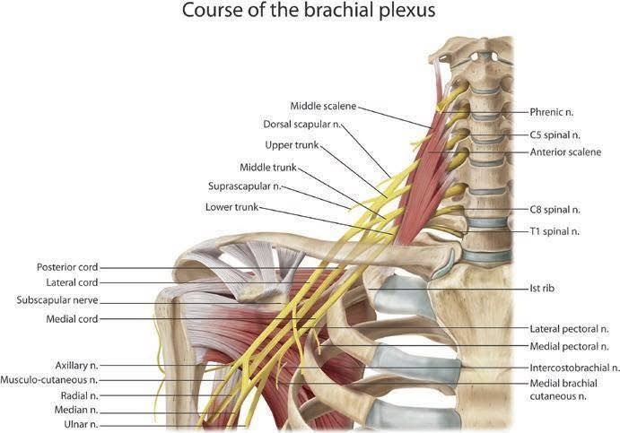

手麻6年，原來是肌筋膜失能的問題！
手麻6年，原來是肌筋膜失能的問題！
#手麻，未必都是 #頸椎壓迫 造成的，肌筋膜失能是很容易被漏掉、沒被注意到的原因之一。
初診來了一位年輕女性，從研究所畢業就容易左手麻，從肩胛骨下方一路麻到第4第5指，最近麻到影響睡眠，睡著後會被麻醒，也無法側躺，一壓到就會開始發作。
這些年復健、針灸、推拿都試過，症狀反反復復，時好時壞。
觸診檢查，左側肩胛棘下窩肌群非常腫脹，很明顯的Trps觸感，按壓下去直接重現出左手的麻脹感，很明顯這區是發生疼痛的區域。
但，問題的根源其實不在此。
基本上，這類的問題多半是下背肌群長時間被拉長，造成肌筋膜功能被抑制後的結果，除了處理肩胛棘下窩的腫脹肌群，也需要處理下背肌群的抑制狀況，才能真正得到改善。
透過針刺與徒手手法處理後，當下左手麻脹感就消失了！標與本都需要治療，才能讓治療事半功倍。
👩：「雖然很痠，但是很舒服！」
手臂、手指的痠麻脹痛，很大一部分都跟肩膀區域的肌群、甚至頸部肌群的肌筋膜失能高度相關，很高機率就是肌筋膜失能所導致的！
這類問題透過乾針針刺與徒手技術的處理，能夠在很短的時間內解除問題，就能避免漫長的痛苦折磨囉！
太初中醫診所
中醫師 黃彥鈞
